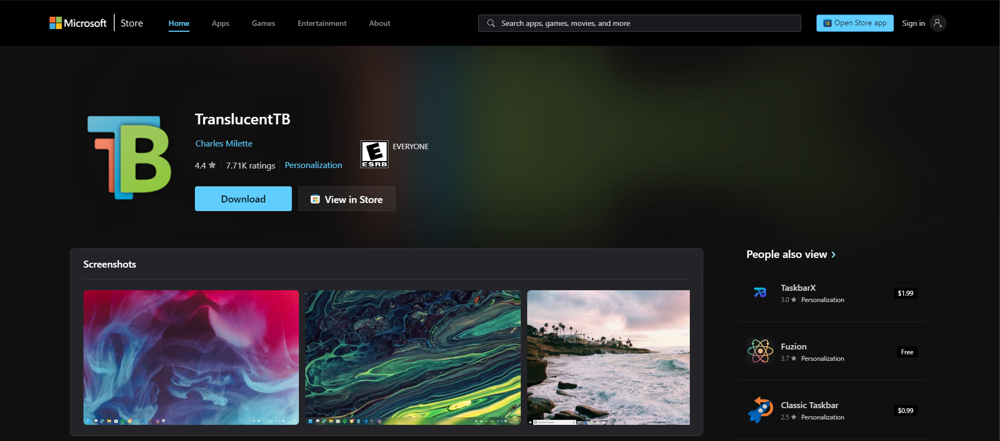

How to Add Transparency to Your Taskbar
Welcome to my first blog post! Do you think the default Windows 10 taskbar could use some transparency? Today, I'll show you two methods to achieve this: one using the Windows registry and another using a third-party tool.
Method 1: Using the Windows Registry
The first method involves editing the Windows registry. Follow these steps:
-
Press Win + R, type
regedit, and press Enter. - Navigate to the following key:
- Create a new DWORD (32-bit) value named:
- Set the value to 1 by double-clicking the entry.
- Restart Explorer by pressing Ctrl + Shift + Esc, selecting Explorer, and clicking Restart.


Now compare the default taskbar:

With the tweaked taskbar:

Method 2: Using TranslucentTB
If you'd like the taskbar to be fully transparent, you can use the third-party tool TranslucentTB. Here's how:
- Download TranslucentTB from its GitHub page.
- Install it via the Microsoft Store or by downloading the zip file. 
When you start the app, you'll notice that the taskbar became transparent.

If you don't want the taskbar to be fully transparent, feel free to experiment with the different options!

Don't forget to check "Open at boot" if you want it to start each time when you login on Windows!

That's it! That's how you get a transparent taskbar on Windows 10 and 11. I hope you enjoyed my first blogpost!